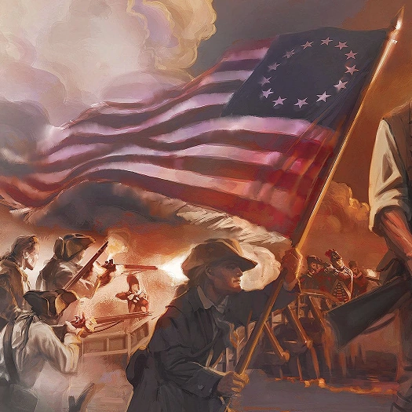
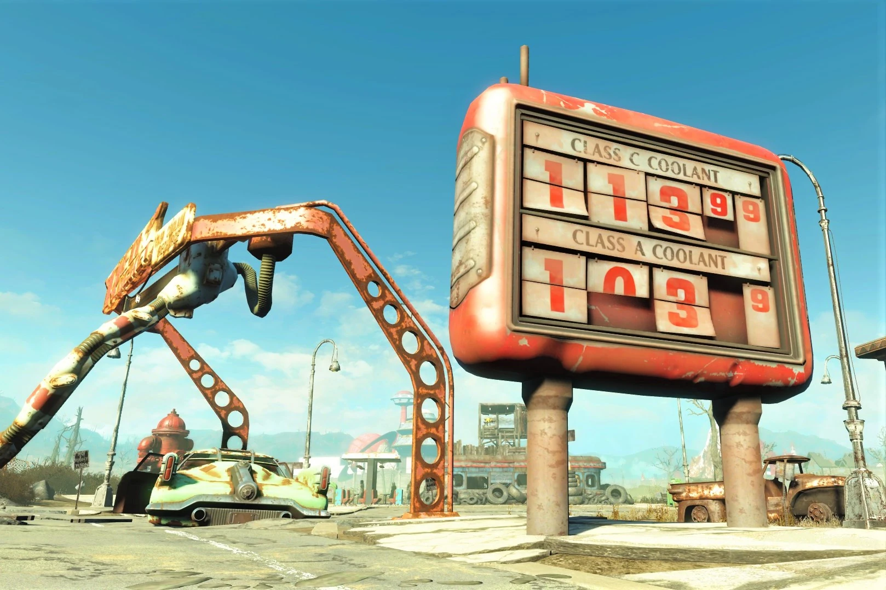
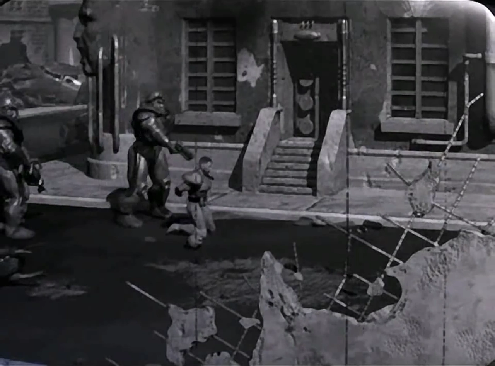
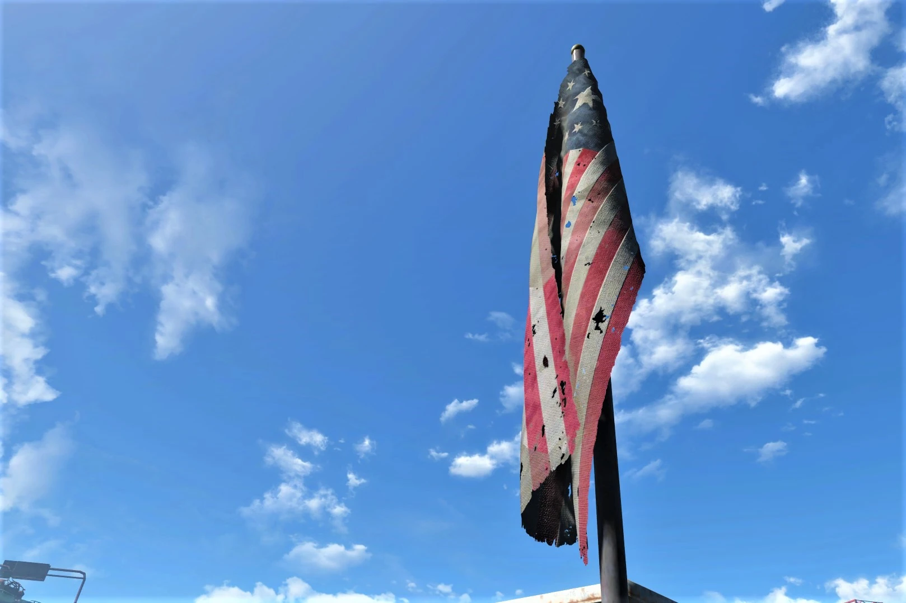
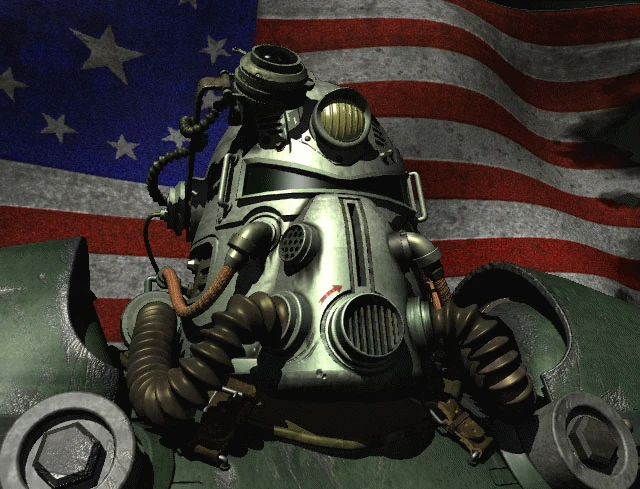
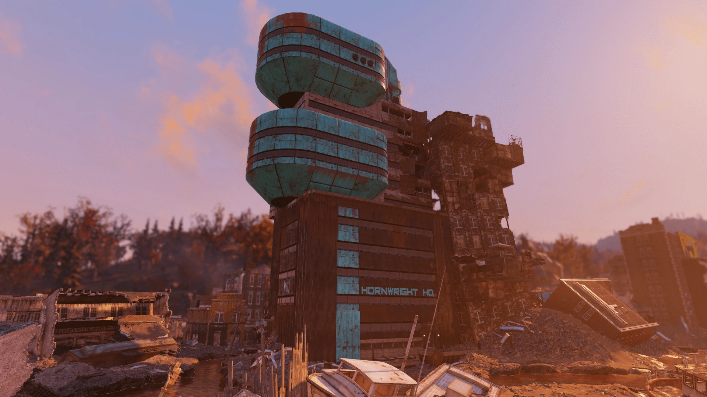
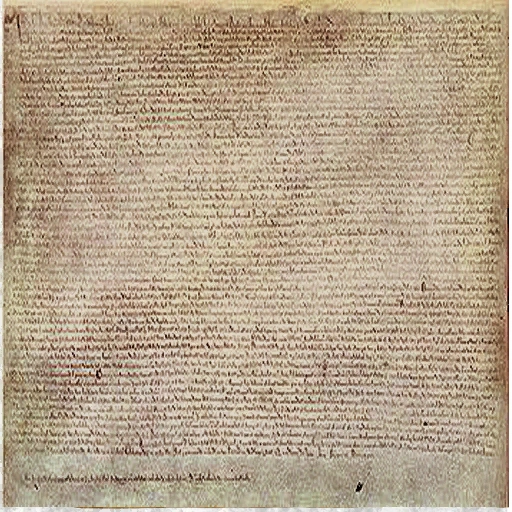
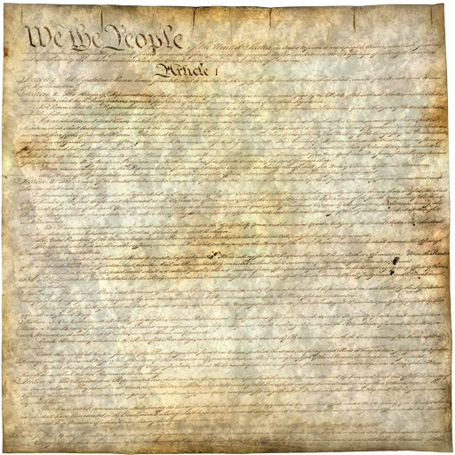
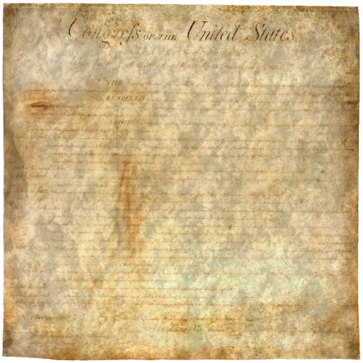
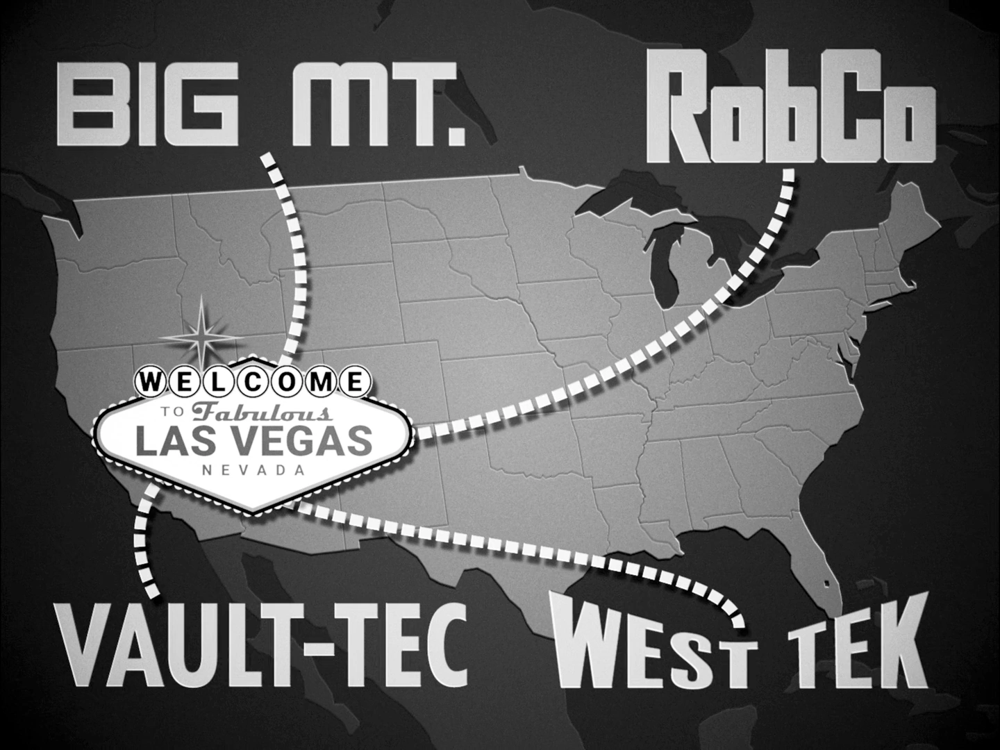

United States of America
アメリカ合衆国
「2077年のアメリカは、先進的な技術的成果と……恐るべき市民の対立の地でした。どの時代であれ、ほとんどの一般市民が望んだのはただ一つ——幸福で平和な生活。彼らが得たのは、完全な核の絶滅でした。」
概要
アメリカ合衆国（U.S.A.）は、大戦前に北アメリカに位置していた連邦共和国です。
21世紀を通じて中国と並ぶ世界の二大超大国として君臨し、核融合・核分裂を中心とした先端技術——軌道研究ステーションから民生用ロボティクスまで——を開発しました。同時に大量破壊兵器、特に核兵器の膨大な備蓄も行っていました。
2077年までに合衆国は、軍産複合体と深いつながりを持つ寡頭制的な「影の政府」——エンクレイヴ——によって実質的に支配されていました。かつて栄えた民主主義は事実上の軍事独裁制となり、企業利益と軍指導者によって統治されていました。
大戦中のこの組織による政府継続プロトコルへの介入が、指揮系統の全面的な崩壊を招き、社会の完全な崩壊と合衆国の解体・消滅へとつながりました。
核の大虐殺の後も事実上消滅したにもかかわらず、ウェイストランドの多くの組織が合衆国の理念を受け継ぎ、その制度を模倣あるいは復活させようとしています。
歴史
独立戦争と西部開拓

1776年7月4日、建国の父たちによって独立が宣言されました。独立後、国はフランス、スペイン、メキシコからの土地獲得やテキサス共和国の併合を通じて急速に拡大し、大西洋岸から太平洋岸まで広がりました。
西部への入植者たちはマニフェスト・デスティニー（明白なる運命）の理念——合衆国は北米大陸全体に広がる運命にあるという思想——を掲げました。先住民族の土地への侵食は衝突を生み、やがて先住民は居留地と呼ばれる法的に指定された土地に追いやられました。
南北戦争と世界大国への台頭
1860年代の南北戦争は国の恒久的分裂を防ぎ、奴隷制を終結させました。
戦後、ロシアからアラスカを獲得し、ハワイ王国を併合。米西戦争と第一次世界大戦で国際的影響力を拡大しましたが、真の超大国となったのは第二次世界大戦後でした。
日本の真珠湾攻撃を受けて連合国に参戦し、広島・長崎に原爆を投下して戦争を終結させました。核戦争の導入はソ連との軍拡競争を引き起こし、冷戦が始まりました。
1969年、合衆国は13のコモンウェルスに再編され、新しい国旗が採用されました。
宇宙開発
1961年5月5日、USSA（合衆国宇宙局）の支援のもと、カール・ベル大尉がデファイアンス7号で既知の人類初の宇宙飛行を達成しました（ソ連と中国は異議を唱えました）。
1969年7月16日、ヴァーゴII月面着陸船「ヴァリアント11」が月面に着陸。リチャード・ウェイド大尉、マーク・ガリス大尉、マイケル・ヘイゲン大尉が地球以外の天体を歩いた初の人類となりました。
2020年にはデルタIXロケットが就役し、月への最後の有人飛行となりました。約15年間運用された後、軍事用に転換されました。

資源戦争

合衆国は2052年に始まった資源戦争——石油やウランといった有限資源に過度に依存した持続不可能な世界経済がもたらした一連の紛争——の主要当事国でした。
世界最後の残存資源をめぐる対立は、2052年7月に国連の解散を引き起こしました。
2053年には感染力の強い「新型ペスト」が出現し、数万人を殺害。防衛請負業者のウエスト・テックが対抗施設を設立し、軍の管理下に置かれました。治療法は見つかりませんでしたが、この研究が後のFEV（強制進化ウイルス）研究の礎を築きました。
中東での核交換やヨーロッパ・中東戦争の壊滅を受け、2054年には連邦政府がプロジェクト・セーフハウスを開始。ボルト・テック社が契約を獲得し、核戦争や致死的疫病から人口の一部を守るための巨大な地下シェルター「Vault」の建設が急ピッチで進められました。
2059年までに、世界情勢の悪化に備えて軍備を増強。アラスカにアンカレッジ前線が設置され、石油資源を外国の侵略者から守る態勢が整えられました。また最初の人工知能がアメリカの研究所で誕生しましたが、メモリの制約により拡張はすぐに停止されました。
中米戦争
2060年、世界中で燃料が枯渇し始めました。ガソリンは自動車に使うには貴重すぎるものとなり、街の交通は止まりました。電気自動車や初期の核融合車は生産量が限られ、社会のニーズには間に合いませんでした。
2066年、合衆国は石油の中国への輸出を拒否し、アメリカの科学者がマイクロフュージョン・セルを発明。これが苦境の中国をさらに追い詰めました。
追い詰められた中国は軍事的な暴挙に出ます。人民解放軍がアラスカに侵攻し、石油資源を奪取しようとしました。アンカレッジの戦いが中米戦争の幕開けとなりました——これが合衆国が戦う最後の戦争でした。
T-45パワーアーマーの投入が中国の戦車や歩兵の突破を防ぎましたが、事態はすぐに膠着状態に陥りました。
2074年、防衛戦争を主張しながらも、合衆国は中国本土の汕頭に侵攻。カナダ、アラスカ、中国本土の三正面作戦で経済は限界まで引き延ばされました。
2076年までに戦争は10年間続き、両国とも崩壊寸前でしたが、撤退するには賭け金が大きすぎました。
赤の恐怖
連邦政府は高まる国内パニックを利用し、反共産主義感情を煽り、集会を抑制し、「疑わしい分子」の通報を奨励しました。
「模範的市民ホットライン」が設立され、ヒステリックな市民が共産主義を支持するとみなされる行動について隣人を政府に密告できるようになりました。
さらに陰惨なことに、大統領令99066号のもと、中国系アメリカ人の市民・住民は裁判なしで自宅から連行され、強制収容所に送られました——第二次世界大戦中の日系アメリカ人の強制収容を不気味に想起させるものです。
メリーランド州のタートルダブ拘留キャンプはそのような収容所の一つで、不衛生な環境に収容者を押し込め、虐待・拷問・過酷な尋問が行われました。多くの収容者が合衆国中の様々な研究施設に「消えて」いきました。

カナダの併合
中米戦争は膨大な資源・資材・人員を消費し、既に疲弊していたアメリカ経済をさらに圧迫しました。
合衆国軍はアンカレッジでの戦闘中にカナダの資源を大胆に搾取し、領空を侵犯しました。暴動・抗議・対立関係の末、2072年にパイプラインの破壊工作未遂事件が発生。合衆国軍はこれを口実にカナダへの本格的侵攻と併合を開始しました。
2077年までに併合は完了し、カナダは国家として消滅しました。占領された州はアメリカの「領土」となりましたが、州やコモンウェルスとしての地位は与えられませんでした。軍は戦闘服を装備した警備部隊を派遣し、カナダの住民と抵抗運動を鎮圧しました。

アメリカの終焉と大戦
2077年、コンスタンティン・チェイス将軍率いる冬季仕様T-51パワーアーマー部隊がアンカレッジを奪還。10年間の戦争の末、アンカレッジ奪還作戦は終結しました。
アラスカの勝利とT-51の投入は中国本土での攻勢を活性化させましたが、効果は長続きせず、中国の抵抗が強まりました。10月までに状況は再び膠着しました。
戦争はなおも終わりが見えませんでした。数十億ドルと数千の犠牲が無駄に費やされました。10年に及ぶ総力戦は国庫を空にしました。
ボルト・テック（2076年時点でアメリカ最大の企業、推定1兆ドルの評価額）をはじめとするメガコーポレーションへの際限なき外部委託と権限譲渡の結果、合衆国は億万長者が支配する寡頭制国家と化していました。
2077年初頭、寡頭制支配者たちは中国からの最後の核攻撃をいつ受けてもおかしくないと見て、世界各地の遠隔地に退避しました。大統領と側近はカリフォルニア沖の石油リグを占拠し、ここがエンクレイヴの本部となりました。合衆国は事実上、指導者を失ったまま放置されました。
ボルト・テックの幹部たちは合衆国を「失敗した国家」と見なし、国を救うという当初の目標を放棄。代わりに自社を存続させることを選びました。
そして2077年10月23日、事態は不可逆的な局面を迎えました。アメリカ軍が北京を包囲し始めた中、中国が先制核攻撃を実施。2時間の黙示録的な破壊の後、戦争は終わり、世界は灰燼に帰しました。
放射性降下物は社会全体を壊滅させ、アメリカ合衆国は——かつて知られていたその姿で——消滅しました。地下深くのバンカーに隠れた指導者たちに見捨てられた生存者たちは、自力で再建を始めました。
社会
合衆国は自由と全ての人への正義の原則の上に建国されましたが、21世紀の資源危機とトラウマ体験がこれらの原則をほぼ完全に放棄させました。
一般市民が望んだのはただ幸福で平和な生活でしたが、共産主義と経済崩壊への恐怖は、市民権の段階的な剥奪への自発的な同意をもたらしました——自由と引き換えに安全を得る取引です。
労働組合は政府と企業の双方から激しい攻撃を受け、しばしば敵のために働いていると非難されました。アパラチアでは弾圧が特に過酷で、ホーンライト・インダストリアル、アトミック・マイニング・サービス、ロブコ・インダストリーズがエヴァンス知事の支持を得て人間の労働力をロボットに置き換え、何千人もの労働者を失業させました。
合衆国海軍のシュガー・グローブ施設は、市民の秘密監視、労働活動家の特定、裁判なしの拉致・殺害を行い、生き残った子供は養子に出されました。
政治体制
合衆国政府は公式には立法・行政・司法の三権分立に基づく連邦共和国でした。市民は下院議員と上院議員を選出し、戦時中も選挙が行われました——サム・ブラックウェル上院議員がアパラチアで「暴走」した際の緊急補欠選挙がその一例です。
しかし現実には、権力の分立は名目的なものでした。行政府、軍部、メガコーポレーションが全て結託し、影の陰謀——エンクレイヴ——を形成。国民を自分たちのゲームの駒として利用していました。
この事実を覆い隠すため、狂信的なナショナリズム、反共産主義、そして「プロジェクト・ブレインストアム——誘導的愛国主義イニシアチブ」のような全体主義的施策が用いられました。
その結果、国民は「愛国的愛国者のためのアメリカ純正愛国法」——致死的な武力行使を含む、事実上あらゆる目的で市民を徴用できる法律——のような国家の暴走すら容認するに至りました。

軍事

合衆国軍は陸軍、海軍、海兵隊、空軍、沿岸警備隊で構成される統合軍でした。
軍国主義を強める超大国として、軍は法執行と公共問題への支配を強めていきました。国防総省が管理する軍は、国防情報局や各軍の秘密作戦による広範な国内スパイ活動を通じて、アメリカ体制の柱の一つとなっていました。
前線で戦う歴戦の部隊以外は訓練が不十分で、特に州兵の補助部隊の状況は深刻でした。
最終的には民間人への軍用レーザー兵器の発行が承認され、共産主義者の侵攻や反乱に備えた地域防衛が図られました。
経済

自由市場と公正競争の原則に基づいていた経済は、21世紀半ばの資源不足で一握りのメガコーポレーションに支配されることになりました。
これらの企業は国家インフラに深く統合され、企業が終わり国家が始まる境界線を引くことは学術的議論にしかなりませんでした。
ボルト・テック社は2分15秒（135秒）のトイレ休憩を厳格に取り締まる搾取的な労働慣行で知られ、2077年には核安全ソリューション提供会社として「アメリカで最も輝かしい未来を持つ企業」に選ばれていました。
ポセイドン・エナジーはエネルギー市場でほぼ独占的地位を占め、原子力発電所、残存油田の開発、さらにHELIOS Oneのような持続可能エネルギーまで支配。軌道ビーム兵器の開発も行っていました。
ロブコ・インダストリーズは政府にミスター・ガッツィー軍用ロボットを供給する傍ら、専用の拷問オートマトン「ミスター・トーチャラーズ」まで開発し、監督なく人間の脳を中央処理装置とするロボブレインの開発にも参加しました。
技術
合衆国は技術革新の世界的リーダーであり、その過剰は大戦後もウェイストランドに影を落とし続けています。主な技術分野：
- 核技術 — 核エンジンと核電池の小型化に成功し、石油供給の減少を核融合車で補った。中国など他国に対する最大の優位性。
- ロボティクス — ロブコとジェネラル・アトミックスの二大企業。プロテクトロン、ミスター・ハンディからアサルトロン、セントリーボットまで。大戦後もロボットの多くが稼働を続けたが、プログラムが暴走して敵対的に。
- 宇宙開発 — USSA運営。人類初の宇宙飛行を主張し、月面での軍事行動まで実施。後に多くの宇宙産業が軍事転用。軌道爆撃兵器プラットフォームを運用。
- 兵器 — 通常火器からレーザーライフル、プラズマ兵器、ガウス兵器まで。パワーアーマーの開発は歩兵を戦車に匹敵する存在に変え、中国は模倣品の製造で大きく遅れた。
- 生物兵器 — 人工疾病への対抗手段として開始されたFEV研究が偶然の成功を収め、スーパーミュータントの基盤に。実験対象は捕虜、政治犯、収容された中国系市民、脱走兵、小さな町のコミュニティまで。
- 気象操作 — ATLAS天文台は夏に吹雪を引き起こし、ビッグMTのホープヴィルでの実験はディバイドの永続的な暴風を生んだ。Vault 63ではATLASの技術でシェナンドー国立公園に巨大な嵐を発生させた。
シリーズでの登場
全てのFalloutゲームは旧合衆国領内で展開されます：
- Fallout / Fallout 2 — カリフォルニア州
- Fallout 3 — キャピタル・ウェイストランド（ワシントンD.C.周辺）
- Fallout: New Vegas — モハビ砂漠（ネバダ州）
- Fallout 4 — コモンウェルス（マサチューセッツ州ボストン周辺）
- Fallout 76 — アパラチア（ウェストバージニア州）
- Fallout TV — ロサンゼルス周辺
ギャラリー




Falloutにおけるアメリカ合衆国は、すべてのロアの出発点であり、シリーズ全体を貫く最大の国家です。
「自由と正義の国」として建国されながら、21世紀には反共感情を燃料に市民権を削り取り、中国系住民を強制収容し、カナダを丸ごと飲み込み、愛国法で市民を徴用し、最終的には億万長者の寡頭制に乗っ取られる——この転落の過程が、Falloutの世界を単なるポストアプカリプスから政治風刺にまで昇華させています。
特に印象的なのはボルト・テックの位置づけです。核戦争から市民を守るはずの企業が「失敗した国家を生かしておくのは馬鹿げている」と判断し、国ではなく自社の存続を選ぶ。バドの「人類の未来はたった一つの言葉に集約される——マネジメントだ」というセリフは、Falloutの全テーマを一行で要約しています。
そして2077年10月23日。中国が先制核攻撃を放った時、大統領はとっくに石油リグに逃げていた。市民は地下深くのバンカーに見捨てられ——あるいは見捨てられたことすら知らないまま——消えていった。合衆国は誰にも看取られないまま、2時間で消滅しました。
それでも200年後のウェイストランドで、NCRがその理念を復活させようとし、エンクレイヴがその影を引きずり、BOS（ブラザーフッド・オブ・スティール）がその軍事遺産を受け継いでいる。死んだはずの国が、まだ生きている。それがFalloutの最大の皮肉であり、最大の魅力です。
This article was created by translating and editing United States of America from Nukapedia: The Fallout Wiki.
Licensed under the Creative Commons Attribution-Share Alike License (CC BY-SA 3.0).
© Overseer Mohi's Terminal — Fallout Lore Archive
コミュニティ維持のため、寄付を受け付けております。
> COMMENTS